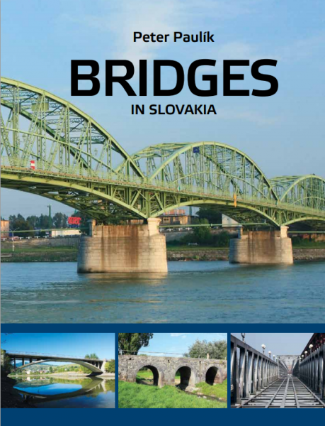

|  | Bridges in Slovakia* | Kniha v PDF | Objednať |
|
Mosty na území Slovenska* | Kniha v PDF | Objednať |
|
Technológie výstavby betónových mostov | Kniha v PDF | Objednať |
| Technológie výstavby betónových mostov. Časť 2: Technológia letmej betonáže | Kniha v PDF | Objednať | |
| *V prípade záujmu je možné si objednať tlačenú verziu kníh v cene 20 eur (Mosty na Slovensku a 1. diel Technológie výstavby BM)
prostredníctvom e-mailu |
1/2009-6/2009 D1 Jabloňov -Studenec, oblúkový 13-poľový most (max. rozp. 80 m., dl. 680 m) - výpočty a výkresy spod. stavby
4/2010-8/2010 Most obj. 214-00 na ceste I/11 v km 30,722 D3, statický výpočet spod. stavby. DSP 5/2010-7/2010 Most v Poľsku (dl. 430 m.) - vyšetrovanie zlyhania pilierov - Správa k vystuženiu pilierov - spoluautor odborného posudku 4/2010-10/2012 Púchov - nové železnične mosty nad Váhom (dl. 322 m a 656 m., max. rozp. 65 m), riešenie spodnej stavby (DSP, DRS) 11/2012-4/2013 Posúdenie príčin zlyhania podpernej skruže pri výstavbe mosta pri Kurimanoch - spoluautor posudku pre NDS. 4/2013-7/2013 Železničný most cez Váh v Trenčíne (dl. 343 m, max. rozp. 52 m.), statický výpočet a výkresy spodnej stavby, DSP a DRS 6/2013-9/2013 Expertízne statické posúdenie vláknobetón. kontajnera v úložisku RÚ RAO Mochovce, spoluautor statiky a posudku 4/2014-7/2014 D1 Liet. Lúčka - Žilina (obj. 201 a 202), 5 a 8 poľový most, statický výpočet spodnej stavby mosta 4/2014-7/2014 Hippoaréna Šamorín (B13 - krytá jazdecká hala), Návrh a posúdenie základov a základového roštu pod tribúnu, 6/2014-9/2014 Rekonštrukcia najstaršieho železobetónového mosta v Krásne nad Kysucou - konzultant 4/2016-8/2016 Vypracovanie katalógu predpätých prefabrikátov pre doskové mosty - spoluautor konštrukčného a statického riešenia 6/2016-2/2017 Projekt DÚR a DSP pre lávku pre peších pri Topoľčanoch, vypracovanie variantov (dl. 103 m), finál: extradossed riešenie 2016-2017 Spolupráca na vývoji debniacich dosiek s GFRP výstužou 4/2017 Variantné riešenia a projekt DÚR pre lávku pre peších vo Vrábloch (dl. 40 m, oceľový variant) 6/2017 Výpočet deformácií mosta pre potreby zaťažovacej skúšky v Trenčíne (3 poľový cestný most zosilnený predpätím) 6/2017 Vypracovanie projektu opôr mosta ponad železnicu v rámci cyklotrasy Dúbravka - Lamač (DSP) 8/2017 Expertízne posúdenie problematiky betónov a betonáží pri výstavbe Národného futbalového štadióna v Bratislave 9/2017-11/2017 Variantné riešenia a projekt DSP lávok pre peších v Senici - predpäté jednopolové lávky s nosnou GFRP výstužou 11/2017 Variantné riešenia lávok pre peších v Holíči - vypracovanie alternatív pre DÚR 9/2017-12/2017 Diagnostika existujúcej oceľovej lávky v Nimnici, návrh rekonštrukcie a vypracovanie dokumentácie na úrovni DSP a DRS. 11/2017 Projekt DSP pre lávku pre peších vo Vrábloch (dl. 40 m, priehradová oceľ. konštrukcia so zakrivenými pásmi: "kosákový" tvar) 8/2017-1/2018 Podrobná diagnostika 8. predpätých mostov v Bratislave celkovej dĺžky cca 2 km - spoluautor diagnostiky 1/2018 Spolupráca s firmou Doprastav pri príprave realizácie vysúvania mosta v Prešove. 2/2018-5/2018 Vypracovanie projektu lávky pre peších v Námestove z tyčových prefabrikátov (dl. lávky 330 metrov), DSP. 4/2018 - 6/2018 Projekt DRS lávok pre peších v Senici - predpäté jednopolové lávky s nosnou GFRP výstužou